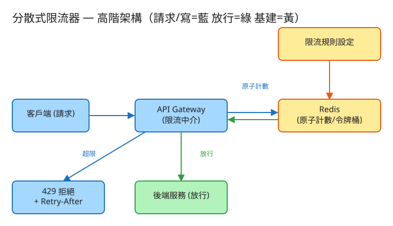

⑲ 分散式限流器 · 初學者友善版
H 基礎設施
看故事就懂
輕鬆讀 25 分鐘
🧠 這份怎麼讀？
這份用「大腦比較好吸收」的方式重寫：先講生活比喻 → 把系統拆成小關卡 → 邊讀邊考自己。
分成兩部分：Part 1 概念（這系統在幹嘛）、Part 2 工程細節（怎麼真的蓋出來，一樣白話）。
遇到 💭 停一下 就先自己想 3 秒再往下看——這叫「提取練習」，比一直往下滑記得更牢。
1. 60 秒搞懂它在幹嘛
想像你開了一家很紅的網美餐廳，門口大排長龍。如果你來者不拒、全部放進來，廚房會瞬間被點單塞爆，
結果是所有人的餐都做不出來——連乖乖排隊的客人也遭殃。
所以你在門口放了一個門衛：「每個人每 10 秒只能點 5 道菜，超過就請你等一下再來。」這個門衛，就是限流器（Rate Limiter）。
🔑 一句話
限流器 = 站在後端服務門口的門衛：替每個客人數「最近這段時間來了幾次」，沒超過就放行，超過就先擋下（回一張「稍後再來」的紙條），保護後面的廚房不被打爆。
2. 為什麼需要「擋人」這道門？
很多人第一個疑問是：「客人越多不是越好嗎？為什麼要把人擋在外面？」關鍵在一個你早就懂的生活經驗——
🚰 比喻：水管與水龍頭
家裡的水管能承受的水量是固定的。如果上游突然灌進 10 倍的水，水管不會「努力多送一點」，而是整條爆掉、全家停水。
後端服務也一樣：超過它能處理的量，不是變慢一點，而是整個垮掉，連正常客人都服務不到。
所以門衛的價值不是「為難客人」，而是犧牲少數超量的請求，保住大多數人的服務。常見要擋的情況有三種：
- 🤖 惡意攻擊：有人寫程式狂打你的網站（爬蟲、DDoS），想把你打垮。
- 🐛 程式 bug：某個 App 寫錯了，瘋狂無腦重試，無意間變成攻擊。
- 💰 公平與計費：免費用戶每天 100 次、付費用戶 10000 次——靠限流分級。
💭 停一下：如果完全不擋，全部放進來，最慘的結果是什麼？
看答案
後端被超量請求壓垮（CPU/記憶體/連線數爆掉），開始變慢甚至當機。這時連正常乖乖用的客人也得不到服務——也就是「一顆老鼠屎壞了一鍋粥」。限流就是在門口先擋掉那顆老鼠屎，保住整鍋粥。
3. 把系統拆成 4 個關卡
別被「分散式」嚇到。門衛要做的事，其實就是闖 4 關，一關一關來：
1認人：你是「誰」？（per-key）
門衛要先搞清楚該對「誰」計數。是同一個帳號？同一個 IP？還是同一把 API 金鑰？這個「身份」叫做 key。
🎫 比喻：每個人各自一張集點卡
限流是每個 key 各算各的，不是大家共用一個總數。就像便利商店集點：你的卡只記你的次數，跟隔壁客人無關。
所以系統會替「每個用戶 / 每個 IP」各準備一個獨立的桶。
👉 面試時先問一句：「要按 user、IP、還是 API key 來限？」按 user 防單人濫用、按 IP 防爬蟲、按 API key 做計費分級——常常是好幾個一起疊。
2數數：最近來了幾次？
認出是誰之後，門衛要數「他最近這段時間來了幾次」。怎麼數？這就是限流最核心的學問，主要有兩種記法：
🎢 比喻一：遊樂園通行券（令牌桶）
想像每個人有個小桶，遊樂園每秒固定丟幾張通行券進去（最多裝滿不溢出）。你要玩一次就交一張券；
有券就放行、沒券就請你等。妙的是：你剛剛沒玩、券攢了一桶，就可以一口氣連玩好幾次（這叫「容許突發」）。
⏱️ 比喻二：看最近 60 秒的閘門紀錄（滑動視窗）
另一種記法是門口裝個感應器，隨時往回看「最近 60 秒內」進了幾個人。
時間是平滑往前滑的，所以不會有「整點一到計數歸零、瞬間放兩倍」的漏洞。
兩種都很常用：令牌桶對用戶友善（允許偶爾爆發一下），是 API 限流首選；滑動視窗則把流量數得更平穩。
3決定：放行，還是回「稍後再來」？
數完之後，門衛做一個簡單判斷：還沒超過 → 放行（轉給後端）；超過了 → 擋下。
🎟️ 比喻：回一張寫好時間的紙條
被擋下時，門衛不是冷冷地把門一甩。好的門衛會給你一張紙條：「現在客滿，請 3 秒後再來」。
在網路世界，這張紙條就是回一個 429（太多請求了） 加上一句 Retry-After: 3（3 秒後再試）。
為什麼要告訴你「等幾秒」？因為如果不講，沒耐心的程式會狂敲門，把你打得更慘（叫「驚群效應」）。
講清楚等多久，乖巧的客人就會安靜等待——這是門衛友善與否的分水嶺。
4同步：好幾個門衛要「對同一本帳」（分散式）
網站很大時，門口不只一個門衛，而是好幾十個門衛同時收客。麻煩來了：如果每個門衛各記各的帳，
客人從 A 門進 5 次、B 門又進 5 次，每個門都覺得「沒超過」，結果實際放了 10 次，超標一倍。
📖 比喻：所有門衛共用一本帳簿
解法是：所有門衛共用同一本帳簿（一個放在中央的 Redis）。每來一個客人，門衛就去帳簿上劃一筆再看總數。
這樣不管從哪個門進，數的都是同一份總數。
但這帶來新問題：兩個門衛同時去翻同一頁劃記，會不會把對方的筆跡蓋掉、算錯數？
解法是「劃記這個動作要一氣呵成、不能被打斷」（這叫原子操作）——下面 Part 2 會講怎麼做到。
✅ 四關一句話
① 認人（每個 key 一個桶）→ ② 數數（令牌桶 / 滑動視窗）→ ③ 決定放行或回 429 → ④ 多個門衛對同一本帳（原子操作）。就這樣。
4. 設計時最怕的 3 件事
工程上的「取捨」聽起來很抽象。換個方式記：這個系統最怕三件事，每個設計都是為了避開某個「怕」。
😱 怕「門衛自己變成瓶頸」
門衛站在每一個客人的必經之路上，如果他自己慢吞吞，等於全站都被他拖慢。
所以限流檢查必須超快（每次 1~2 毫秒內），寧可把帳簿放在隔壁（同機房 Redis），也不能讓門衛跑去很遠的地方查帳。門衛要快，不能擋路。
😱 怕「門衛請假，全站停擺」
如果那本中央帳簿（Redis）掛了，門衛沒帳可查，該放人還是該擋人？
這要事先講好：對外 API 通常選「寧可放行也別讓全站 503」（叫 fail-open）；對脆弱的寫入路徑則可能選「寧可擋住保住後端」（fail-close）。門衛倒下時，也要有 Plan B。
😱 怕「算太精準反而拖垮自己」
想做到「全球所有門衛、每一筆都精確同步、一個不差」，協調成本高到離譜，反而把系統拖慢。
其實限流偶爾多放行幾個沒事——目的是擋住「打爆」級別的洪水，不是會計查帳。所以多數系統選「近似就好」，用便宜的方法換到夠用的效果。夠用就好，別過度追求完美。
5. 一張圖看懂

✏️ 用 Excalidraw 開啟編輯（diagram.excalidraw）
白話導讀，順著看：
- 📱 客戶端送來一個請求 →
- 🚪 撞上 API Gateway（門衛）：先認出「你是誰」（key）→
- 📖 門衛去 Redis（中央帳簿）用原子操作劃一筆、看你這個桶還有沒有額度 →
- ✅ 還有額度 → 放行，轉給後端服務處理；
- 🚫 超額了 → 當場回 429 + Retry-After，不打到後端（這就是限流的價值）；
- 🟡 旁邊還有一份 限流規則設定（誰每分鐘幾次、用哪種演算法），門衛照著它執法。
6. 名詞白話翻譯
看完上面，這些詞你其實都已經懂了，這裡只是把「工程術語 ↔ 白話」對起來，Part 2 會用到：
| 工程術語 | 白話解釋 |
|---|
| 限流器 (Rate Limiter) | 站在後端門口的門衛，數次數、決定放行或擋下 |
| key（per-key） | 對「誰」計數：用戶 / IP / API 金鑰，每個一張集點卡 |
| 令牌桶 (Token Bucket) | 每秒固定補幾張通行券，有券放行、沒券擋；攢著可一次爆發 |
| 滑動視窗 (Sliding Window) | 隨時往回看「最近一段時間」進了幾個，平滑不跳動 |
| 固定視窗 (Fixed Window) | 整點歸零計數；省，但整點交界會被鑽漏洞放兩倍 |
| 429 / Retry-After | 「太多請求了，請 N 秒後再來」的標準回覆 |
| 原子操作 (Atomic) | 劃記這動作一氣呵成、不被打斷，多個門衛也不會算錯 |
| Redis | 放在中央、超快的「共用帳簿」，所有門衛對同一份 |
| TTL（過期時間） | 計數過期就自動丟掉，省得自己掃地打掃 |
| fail-open / fail-close | 帳簿掛了時的 Plan B：放行保可用 / 擋住保後端 |
| 熱點 key | 某個爆紅的 key 把單一帳簿打爆，要分散到多本 |
| QPS | 每秒幾筆請求（衡量「多忙」的單位） |
| API Gateway | 全站入口的總門房，限流通常就放在這層 |
🛠️ Part 2 ｜ 工程細節（一樣白話）
概念懂了，來看「真的要動手蓋，得想清楚哪些事」。一樣用比喻，不用怕。
7. 要準備多大？（規模估算）
🍱 比喻：辦活動前先估人數
辦活動前，你會先估「大概來幾個人」，才決定請幾個門衛、帳簿要多厚。
系統設計也一樣：先估數字，才知道要準備多大的「料」。這一步叫規模估算。
我們估幾個關鍵數字（數字不必背，重點是感受它的「形狀」）：
| 估什麼 | 大概數字 | 所以呢？ |
|---|
| 每天多少請求 | 1 億筆/日 ≈ 平均每秒 1200 筆，尖峰約 6000 筆 | 得算「尖峰」那一刻撐不撐得住 |
| 要幾個門衛 | 每個門衛每秒處理 2000 筆 → 尖峰約 3~5 個 | 多個門衛，所以一定要「共用一本帳」 |
| 帳簿要多大 | 1 千萬個活躍 key × 約 100 位元組 ≈ 1 GB | 小到輕鬆塞進 Redis 的記憶體 |
| 查帳要多快 | 同機房 Redis 來回約 0.2~0.5 毫秒 | 符合「每次檢查 < 1~2 毫秒」的要求 |
💡 關鍵洞察：帳簿小，但翻得超勤
這系統要記的東西其實很少（才 GB 級，小事），難點在「翻帳簿的次數超級多、而且每次都不能算錯」。
所以整個設計不是繞著「容量」轉，而是繞著「每次劃記要原子、爆紅的 key 要分散」轉。
💭 停一下：為什麼「帳簿很小」反而不是重點，「翻帳簿很頻繁」才是？
看答案
因為 1 GB 對現代記憶體根本不算什麼，買台機器就放得下。真正的挑戰是每一個請求都要去翻一次帳簿、而且好幾個門衛同時翻——頻率高 + 要原子，這才是工程上最燒腦、最容易出錯的地方。所以設計重心放在「翻得快又不打架」。8. 系統之間怎麼溝通？（API）
🍔 比喻：點餐單
API 就是兩個系統之間講好的「點餐單格式」：你問我什麼、我回你什麼。
特別的是，限流器沒有自己的業務，它是夾在中間的門衛，所以它的「點餐單」是給上游門衛用的一個「該不該放行？」的詢問。
這題只要記住三件事：
① 門衛問帳簿：「這個 key 該放行嗎？」（最核心）
allow(這是誰key, 用哪條規則)
回我：{ 放行嗎: true/false, 還剩幾次: 2, 該等幾秒: 0 }
這不是給一般客戶端用的，是門衛內部問帳簿的一句話。回來只要三個資訊：能不能進、還剩幾次、要等多久。
② 被擋下時，回給客戶端的「稍後再來」紙條
HTTP 429 Too Many Requests
Retry-After: 3 ← 3 秒後再試
X-RateLimit-Limit: 5 ← 這個視窗總共幾次
X-RateLimit-Remaining: 0 ← 還剩幾次（這裡是 0）
X-RateLimit-Reset: ... ← 幾點額度會重置
為什麼要附這些標頭？讓乖巧的客戶端知道「確切該等多久、還剩幾次」，它就不會無腦狂敲門把你打更慘。這是限流「友善」與否的關鍵。
③ 管理員設定規則（不常變動）
PUT /admin/rules/{範圍}
內容：{ 按什麼算:"api_key", 上限:1000, 視窗秒數:60, 演算法:"token_bucket" }
這張單子是讓管理員調整「誰、多久、幾次、用哪種數法」。規則很少變，所以可以整份快取在每個門衛身上，省得每次都去問。
9. 系統要記住哪些事？（資料模型）
📒 比喻：帳簿裡的兩種頁面
門衛的中央帳簿（Redis）裡，主要記兩種東西：每個人的計數，和大家共用的規則。
🔢計數頁（每個 key 各一筆，會自動過期）
看你用哪種數法，記的東西不一樣：
- 視窗計數：
ratelimit:{誰}:{第幾個視窗} → 一個整數（這視窗來了幾次）
- 令牌桶：
ratelimit:{誰} → { 還剩幾張券:4.2, 上次補券時間:... }
為什麼券數是「小數」(4.2)？
因為券不是整點才補，而是按時間連續補。要用時就看「距離上次補券過了多久 × 每秒補幾張」算出新增了多少券——
所以中間會出現 4.2 張這種小數，這叫「用到才算、慵懶補券」，省得真的每秒去動它。
⏰為什麼每筆都設「過期時間」(TTL)？
限流計數是有時效的——「上一分鐘來幾次」過了這分鐘就沒意義。所以每筆都設一個 TTL，時間到自動消失。
🗑️ 比喻：便當保鮮期
與其自己定期去帳簿裡掃舊資料（累又容易漏），不如每筆貼個保存期限，過期自己爛掉清掉。Redis 的 TTL 就幫你做這件事，省去打掃工。
📋規則頁（變動少，可整份快取在門衛身上）
記：範圍、按什麼算(user/ip/api_key)、上限、視窗秒數、演算法、掛了怎麼辦(fail模式)。
因為規則很少改，每個門衛可以把整份背在身上，不用每次都去中央問——又快又省。
10. 哪裡會塞車、怎麼拓寬？（擴展）
🚗 比喻：找出塞車路段，拓寬它
系統變大時，總有某個環節會先「塞車」。工程師的工作就是找出最會塞的地方，把它拓寬。一個一個看：
| 哪裡會塞車 | 怎麼拓寬 |
|---|
| 多個門衛各記各的帳，總量失控 | 把計數搬到共用 Redis，所有門衛看同一份 |
| 每個請求都要跑去帳簿問一趟，加延遲 | 帳簿放同機房；門衛本地先攢一小批再回報；多筆合併一起問 |
| 某個爆紅 key把單一帳簿打爆（熱點） | 把這個 key 拆成好幾個小桶分散到多本帳簿，各分一部分額度 |
| 中央帳簿(Redis)是單點，掛了就失靈 | 主從備援 + 哨兵/叢集；並事先決定 fail-open 或 fail-close |
| 全球跨洲，同步計數延遲太高 | 每個地區各自限流（區域配額），不追求全球一個不差 |
11. 還有哪些「魚與熊掌」？（取捨）
「Part 1 的三個怕」是核心取捨。這裡補幾個常被面試官追問的：
⚖️ 精確 vs 近似
要全球每一筆都精準同步 → 協調成本高、還拖慢。限流選近似：用滑動視窗計數器、或門衛本地攢批，偶爾多放幾個完全可接受。
⚖️ 令牌桶 vs 漏桶
令牌桶限「平均速率、但容許短暫爆發」（對用戶友善，API 首選）；漏桶限「瞬時輸出絕對平穩、不准爆發」（適合保護脆弱的下游，像寫資料庫時整流）。
⚖️ 固定視窗的「整點漏洞」
固定視窗最省（一個整數），但有個著名 bug：上限每分鐘 100 次，10:00:59 打 100 次、10:01:00 又打 100 次——1 秒內實際放了 200 次！解法是改用滑動視窗把交界抹平。
💭 追問：限流器該放在哪一層？
放 API Gateway（全站入口）最常見：集中管理、好觀測，但多一跳。放 Sidecar（貼著每個服務）延遲低、隔離好，但維運較重。放應用程式裡面最省，但難統一治理。多數選 Gateway。💭 追問：多個門衛去翻同一頁帳簿，為什麼不會算錯？
因為「劃記」這個動作被做成原子操作。簡單計數用 Redis 的 INCR（加一並回傳新值，本身就不可分割）；令牌桶要「讀券數→算補多少→扣減→寫回」好幾步，就包成一段 Lua 腳本，由 Redis 一口氣執行完，中間不准別人插隊——這樣就沒有「你蓋掉我筆跡」的問題。12. 動手玩玩看
讀十遍不如玩一遍。這題有一個真的可以跑的小程式，讓你親眼看到「放行 / 被擋」：
# 啟動（在這題的 demo 資料夾裡）
cd demo
php -S localhost:8019 -t public
# 然後瀏覽器打開 http://localhost:8019
- 設定一條規則，例如「每 10 秒 5 次」。
- 連續快打：看前幾次放行（✅），第 6 次開始被擋（429）。
- 等幾秒再打：看令牌補回來 / 視窗滑過去，又能放行了。
玩的時候想一下把上限調小，是不是更容易被擋？這就是關卡 2 的數數在運作。連打到被擋時，看它回的「還剩 0 次、請等幾秒」——這就是關卡 3 的 429 + Retry-After 紙條。
小提醒：這個 demo 用檔案鎖（flock）模擬 Redis 的「原子劃記」，所以單機就能玩；要上線只要把檔案鎖換成 Redis，限流邏輯一模一樣。
13. 考考自己
先不要看答案，自己用講給朋友聽的方式回答看看（講得出來才是真的懂）：
Q1：用「網美餐廳門衛」解釋，限流器在幹嘛、為什麼需要它？
門衛站在後端門口，替每個客人數「最近來幾次」，沒超過放行、超過就先擋。需要它是因為後端能承受的量是固定的，全部放進來會把廚房打爆，連正常客人也遭殃——犧牲少數超量請求，保住多數人的服務。Q2：用「遊樂園通行券」說說令牌桶怎麼運作？它的特色是什麼？
每秒固定丟幾張券進桶（裝滿不溢），玩一次交一張，有券放行、沒券就等。特色是容許突發：剛剛沒用、券攢著，就能一口氣連用好幾次。所以對用戶友善，是 API 限流首選。Q3：固定視窗有個「整點漏洞」，是什麼？怎麼修？
上限每分鐘 100 次時，在 10:00:59 打 100 次、10:01:00 又打 100 次，1 秒內實際放了 200 次（兩倍）。因為整點一到計數就歸零。改用滑動視窗，隨時往回看「最近 60 秒」，把交界抹平。Q4：per-key 是什麼意思？常見按哪些維度限？
每個 key（身份）各算各的，像各自一張集點卡。常見按 user（防單人濫用）、IP（防爬蟲/DDoS，但 NAT 會誤傷）、API key（做計費分級），而且常常好幾個一起疊。Q5（工程）：好幾個門衛同時翻同一本帳簿，為什麼不會算錯？關鍵字是什麼？
關鍵字是原子操作。簡單計數用 Redis INCR（加一回傳，不可分割）；令牌桶的「讀→算→扣→寫」多步包成 Lua 腳本，由 Redis 一口氣執行完不准插隊。否則用「讀→判斷→寫」三步會發生競態（race），把對方的劃記蓋掉而超賣放行。Q6（工程）：被擋下時為什麼要回 429 + Retry-After，而不是只說「不行」？
告訴客戶端確切該等幾秒、還剩幾次，乖巧的客戶端就會安靜等待；否則沒耐心的程式會無腦狂重試（驚群效應）把你打得更慘。這是門衛友善與否的分水嶺。Q7（工程）：中央帳簿（Redis）掛了，門衛該放人還是擋人？
要事先講好。對外 API 多選 fail-open（寧可放行也別讓全站 503）；對脆弱的寫入路徑可能選 fail-close（寧可擋住保住後端）。也常配一個「本地降級令牌桶」兜底。14. 30 秒回顧
限流器 = 站在後端門口的門衛，保護廚房不被打爆。
4 個關卡：① 認人（per-key，各自一桶）→ ② 數數（令牌桶=通行券、滑動視窗=看最近一段）→ ③ 決定放行或回 429+Retry-After → ④ 多門衛對同一本帳（原子操作）。
3 個怕：怕門衛自己變瓶頸（要超快）、怕帳簿掛了全站停（要有 fail-open/close）、怕算太精準反而拖垮（近似就好）。
工程細節一句話：帳簿小（GB 級）但翻得超勤 → 共用 Redis、用 INCR/Lua 做原子劃記、每筆設 TTL 自動過期 → 熱點 key 要分桶、Redis 是單點要備援。
想看更精簡、面試速查用的版本？👉 前往完整版（同樣內容的工程速查格式）。